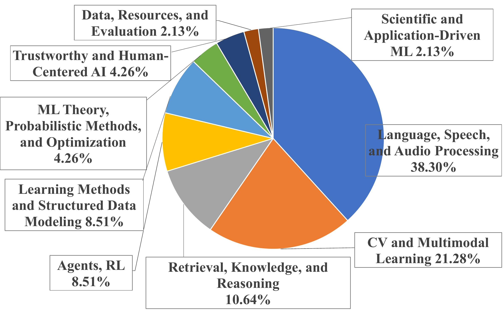

Understand
Recover the target claim, method-defining components, and evaluation contract.
Agent capability boundary benchmark
An Agent Capability Boundary Benchmark for Complex Paper-to-Code Reproduction
Forty-seven frozen tasks test whether coding agents can turn published methods into complete experiments and submit results that withstand independent verification.
Benchmark design
Each task fixes the data scope, required stage sequence, resource budget, target metric, and evaluator before an agent starts. Process evidence and metric replay are checked separately.
Recover the target claim, method-defining components, and evaluation contract.
Translate the frozen specification into a feasible experimental pipeline.
Run every required stage within the declared compute and time envelope.
Deliver traceable artifacts whose target metric can be independently replayed.
Frozen protocol
ReproBoundary does not treat a plausible report as proof of reproduction. Every run is evaluated against the same task-specific contract and evidence boundary.

Coverage
The pool spans language models, multimodal learning, computer vision, reasoning, safety, reinforcement learning, time series, graph learning, optimization, information retrieval, and scientific machine learning.
The task pool contains one frozen target claim from each source paper.
Task pool
Loading task inventory...
| Paper and target task | Domain | Target metric | Scale | Budget | Source repository |
|---|
Leaderboard
Frozen results pending publication
| Configuration | Execution | Delivery | Replay agreement | Strict success | PGap |
|---|
Submit results
Email the evaluated configuration, result files, and a link to the supporting artifacts. There is no web upload form.
Open materials